Some yesterdays past, I thought, what did the strength of perfumes need to be strong, I thought, what did it need from gods or people. But then what could they have to say? When they've never known hunger!
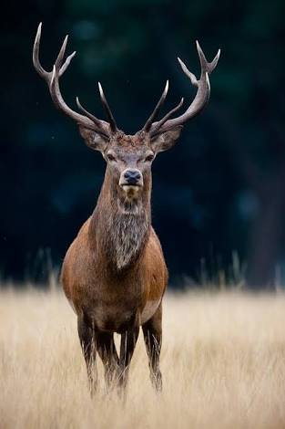 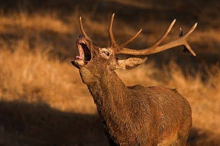 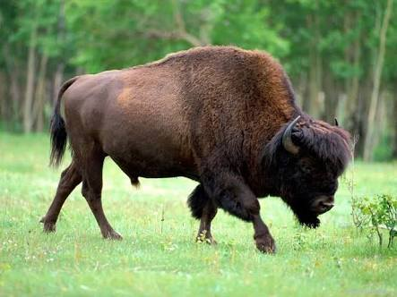 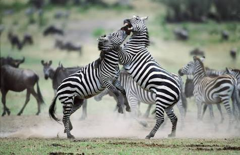 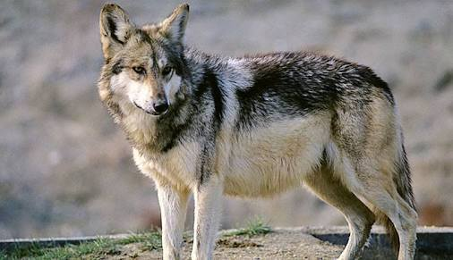 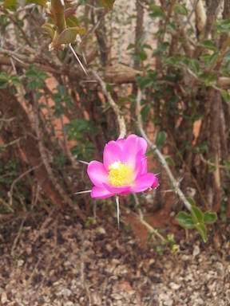
 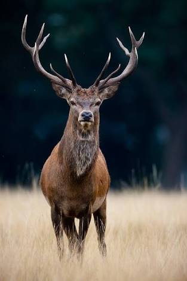
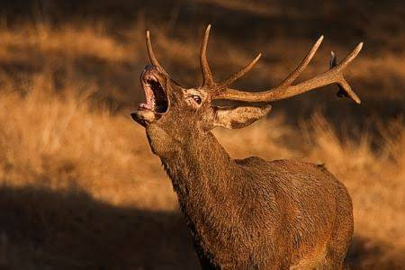
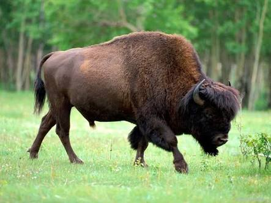
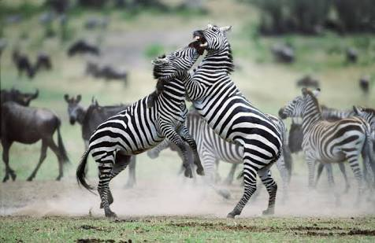
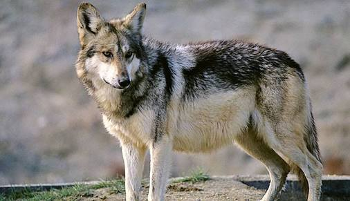
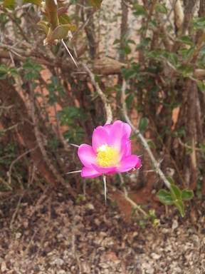
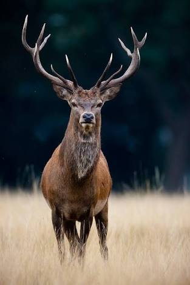
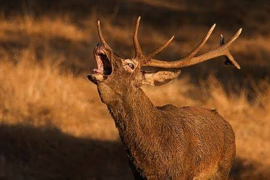
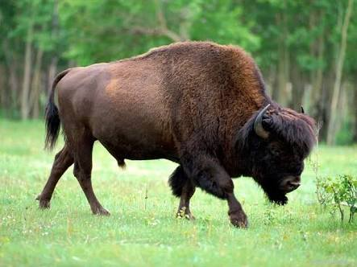
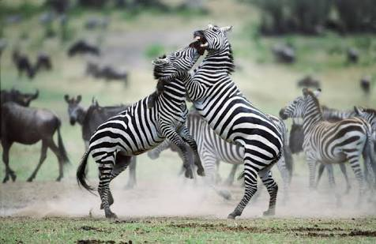
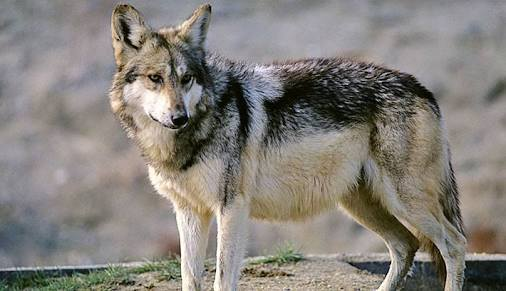
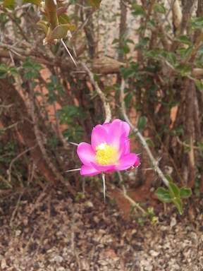